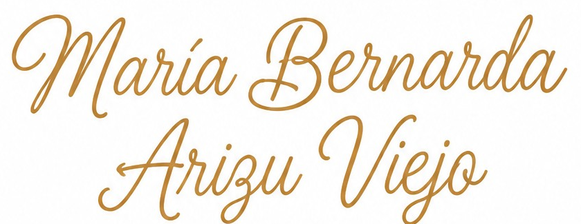
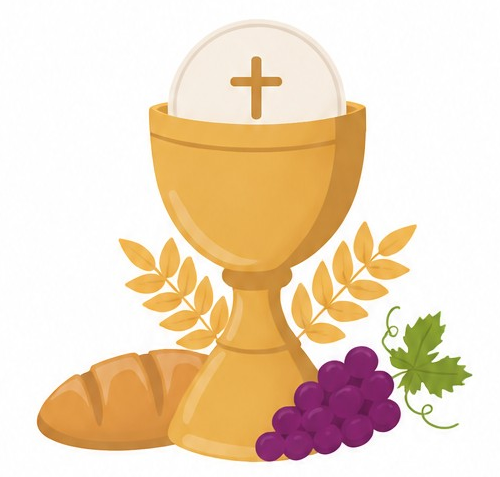
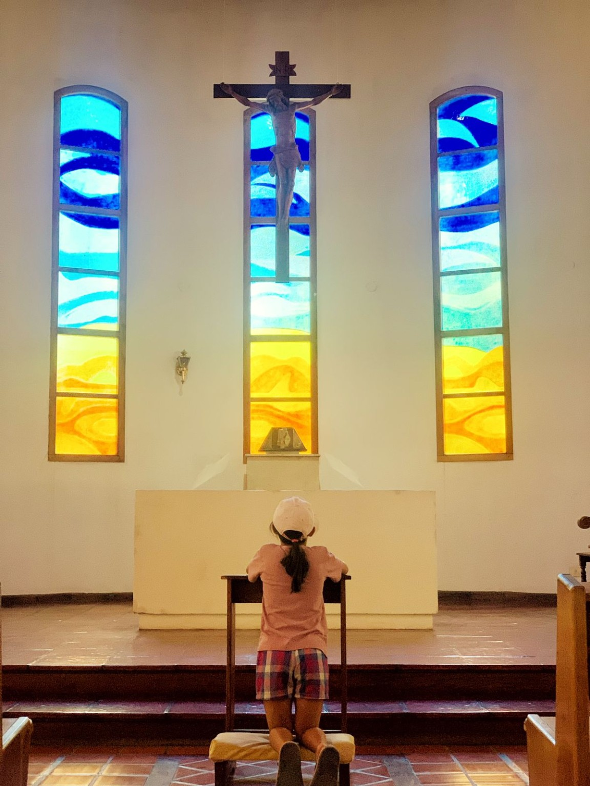
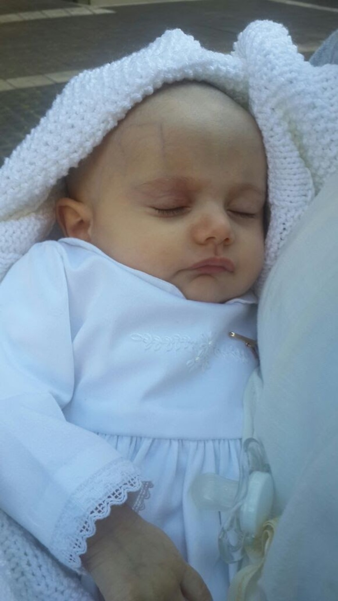
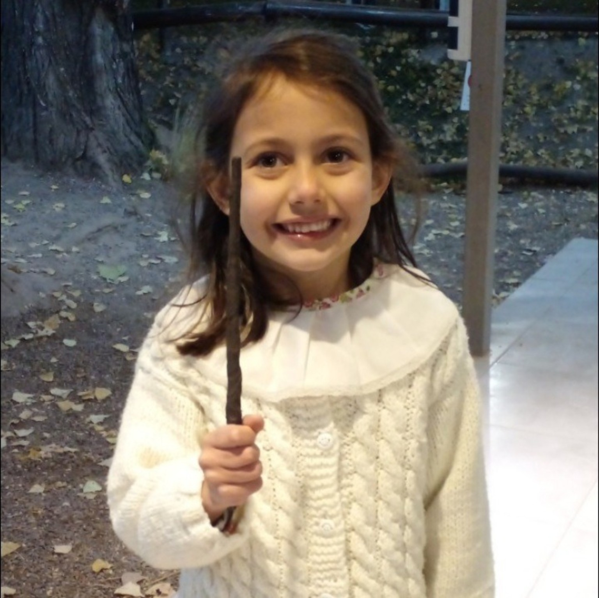
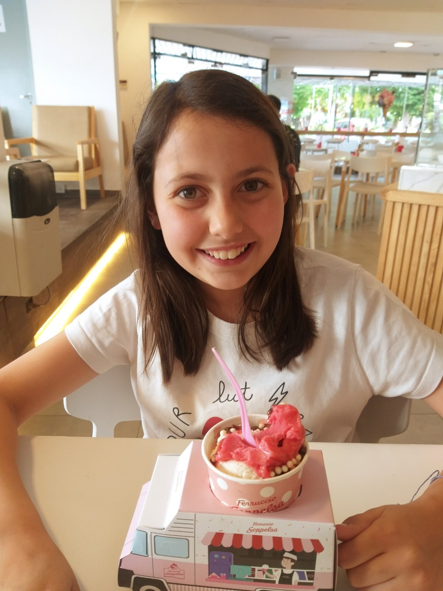

Quédate siempre a mi lado y
llena mi corazón de tu alegría y amor.
MI PRIMERA COMUNIÓN
Sábado 31 de octubre
2026
17:00 hs
Parroquia Corazón de María
Un día muy especial
Con mucha alegría quiero compartir con ustedes el día de mi Primera Comunión.



Gracias por acompañarme en este camino de fe.
Mis recuerdos

Después de la celebración, podremos reunir aquí las fotos de este día tan especial.
Compartí tus fotosAbrí nuestro álbum de Google Fotos para agregar tus recuerdos y ver los que compartieron los demás. Es posible que necesites iniciar sesión con Google.
Dejame un mensaje
Una oración, una bendición o unas palabras para guardar en mi corazón.
Los mensajes son visibles para quienes visiten esta página. Evitá compartir datos privados.
Gracias
Por acompañarme en este día tan importante y ser parte de mi camino de fe.
María Bernarda Arizu Viejo